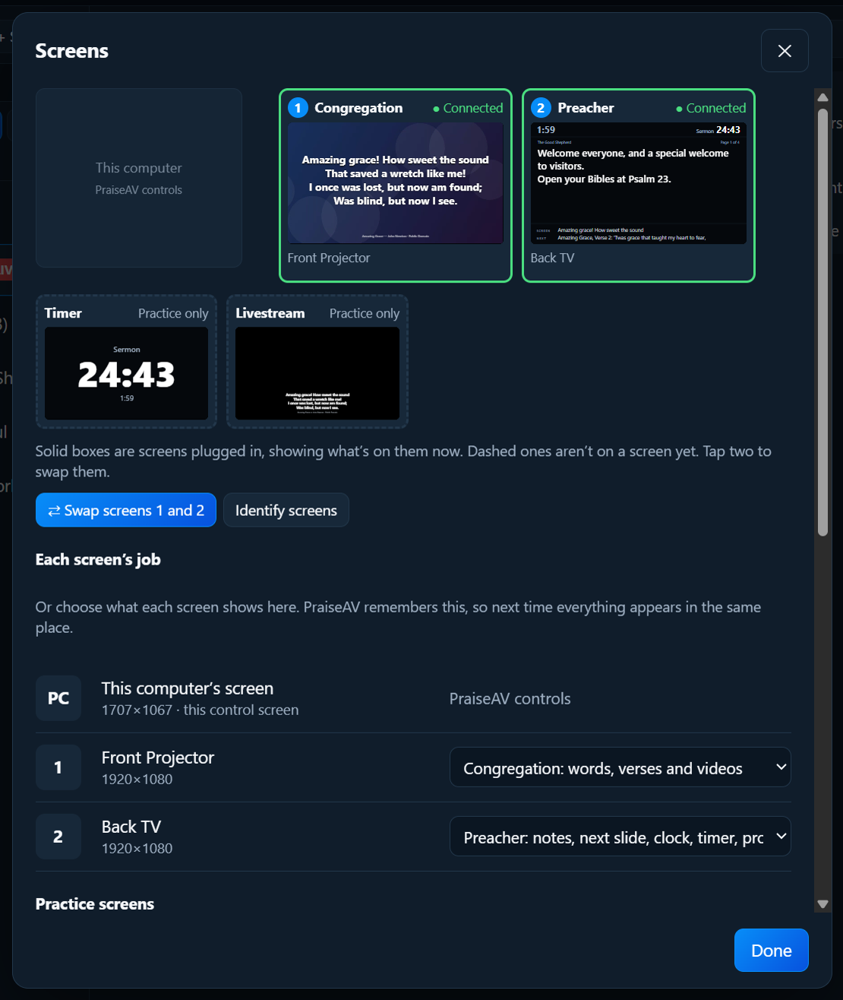
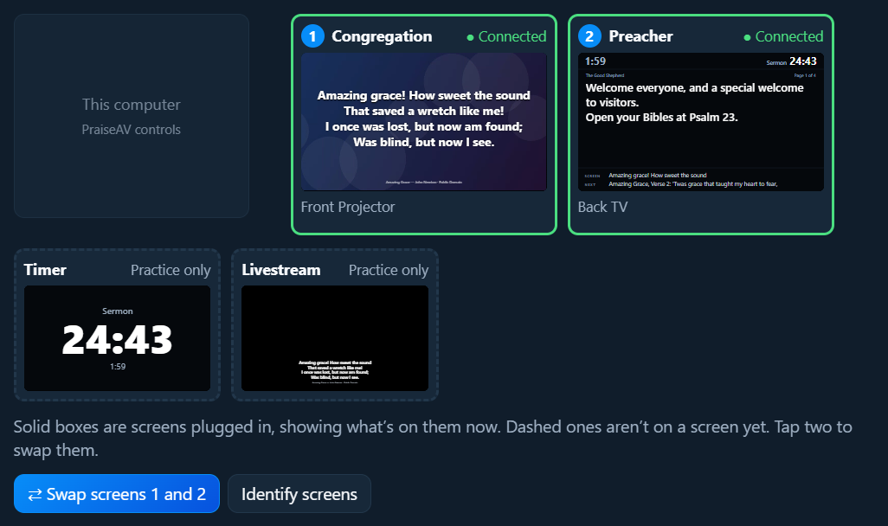
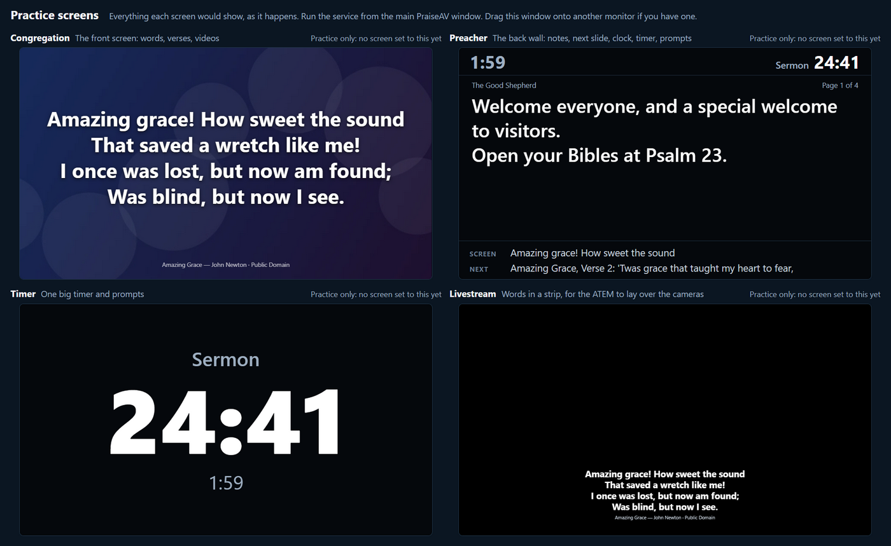

Screens and livestream
Screens
PraiseAV can drive several screens at once, each with its own job.
The four views
| View | What it shows | Usually on |
|---|---|---|
| Congregation | Words, verses, videos, pictures | The projector or big TVs at the front |
| Preacher | Notes, next slide, clock, timer, prompts | A TV at the back, facing the platform |
| Timer | One big timer and prompts | A small screen on the platform |
| Livestream | The words in a strip, for a video mixer to lay over the camera | A cable to an ATEM or capture card |
The computer’s own screen is always PraiseAV controls: the window you work in.
Plugging in screens
- Plug the projector or TV into the computer (HDMI, usually).
- Windows must extend onto it, not copy. Press Windows+P and choose Extend.
- PraiseAV finds it. The first screen gets Congregation, the next Preacher, then Timer.
PraiseAV remembers each screen’s job. Next Sunday, everything appears in the same place by itself.
With no screens plugged in, the congregation view opens in a window, so you can still try everything.
Choosing each screen’s job
Click Screens… at the top right.

Under Each screen’s job, each plugged-in screen has a list: Congregation, Preacher, Timer, Livestream, or Not used.
The screen map
At the top of the Screens window, a map shows every screen, live, with what’s on it now.

- Solid boxes with ● Connected are real screens plugged in.
- Dashed boxes aren’t on a screen yet: Practice only, or Planned: plug in a screen (from your church setup).
Swapping two screens
The preacher’s notes are on the front projector, and the words on the back TV? Tap one, then tap the other. They swap.
Tap a dashed view, then a solid screen, to put that view on it.
Practice screens
Set everything up at home on a laptop, or show a church what the preacher and timer screens do before they’ve bought any.
In Screens…, click Open practice screens. One window shows every view side by side, live, as you go through the service.

Each view has a Show on… list, to put it on a real screen when one is plugged in. Views with no screen say Practice only.
Open a view in a window
In Screens…, under Open a view in a window, click Congregation, Preacher, Timer or Livestream. It opens in a normal window.
This is handy for a screen PraiseAV can’t see by itself (some wireless displays and USB adaptors): drag the window onto it and maximise it.
Hide and Show
Hide at the top right takes all the screens away (to use the projector for something else). Show brings them back.
If a screen isn’t found
- Press Windows+P and choose Extend, not Duplicate.
- Check the projector is on and set to the right input (HDMI 1, HDMI 2…).
- Unplug the cable and plug it back in.
- See Troubleshooting.